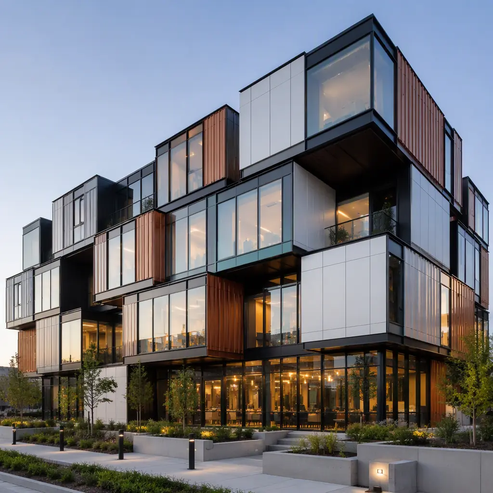
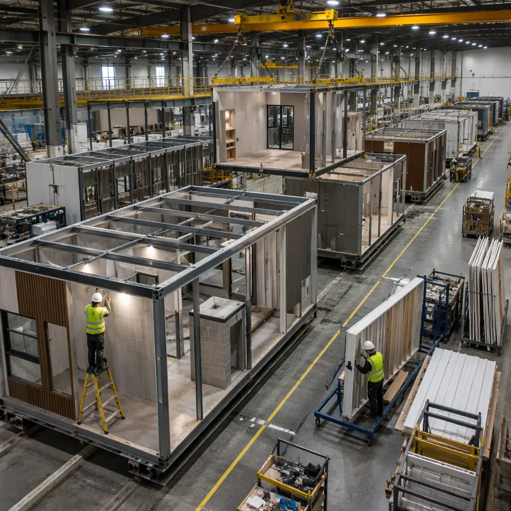
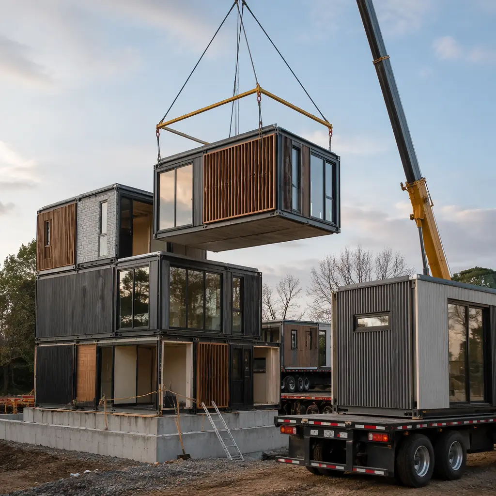
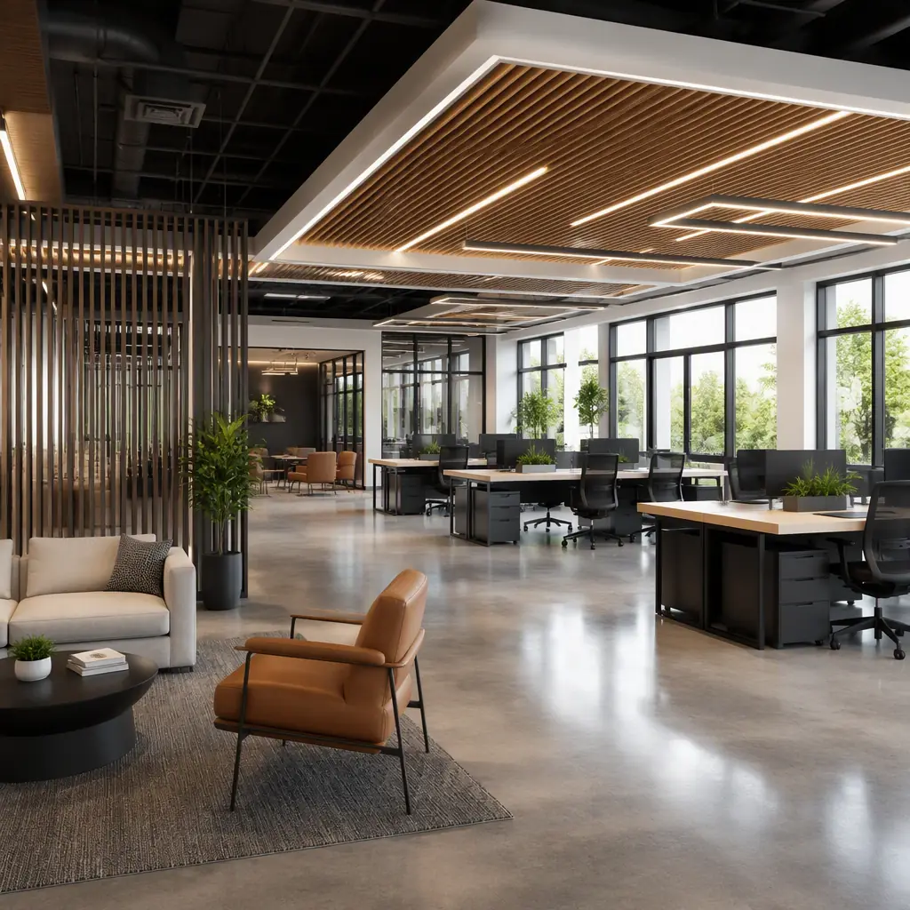

The word "modular" conjures images of identical boxes stacked in rows — and for many developers, that is the assumption that stops them from exploring modular construction for projects that demand architectural distinction. The reality is that modern steel modular construction supports the same level of customization as site-built construction: custom floor plans, mixed facade materials, varying ceiling heights, integrated MEP systems, and architectural features that make a building unique. Over 70% of MODURA's completed projects are fully custom designs, not catalog selections. This guide walks through the process of commissioning a custom modular building — from initial concept to factory fabrication to on-site completion — so you can evaluate whether modular construction can deliver your vision on a faster timeline and a more predictable budget.

What "Custom" Means in Modular Construction
In modular construction, customization operates at three levels, and understanding which level your project requires is the first step in budgeting and scheduling:
Level 1: Layout Customization. The module grid remains standardized (typically 12-15 ft module widths, 40-70 ft lengths), but the floor plan configuration within and between modules is fully bespoke. A 40-unit apartment building might use 12 standard module boxes, but the unit mix (studios, 1BR, 2BR), interior partition layouts, kitchen configurations, and bathroom placements are all custom-designed per project. This is the most common level of customization — approximately 60% of MODURA projects — and carries essentially zero cost premium over "standard" modular because the factory production line is tooled for variable interior fit-out. Our design flexibility guide details the full range of layout options.
Level 2: Architectural Customization. Beyond floor plans, the building's exterior expression is custom-designed: mixed facade materials (brick veneer, metal panel, fiber cement, curtain wall in any combination), varying module setbacks to create architectural depth, integrated balconies and terraces, custom window configurations, and unique roofline treatments. This level requires additional engineering for connection details — the interface between a brick veneer module and a curtain wall module needs detailed shop drawings — and typically adds 3-6% to the module fabrication cost due to non-repeating facade elements and specialized installation sequences.
Level 3: Structural Customization. The module structural frame itself is engineered for non-standard requirements: extra-tall ceiling heights (10-14 ft versus the standard 8-9 ft), large clear spans (30-40 ft column-free interior spaces), unusual module geometries (trapezoidal or angled modules for curved building forms), or integration of special structural features like rooftop mechanical penthouses or below-grade parking connections. Level 3 customization requires the manufacturer's structural engineering team to design and test module frames outside standard production parameters, adding 8-15% to structural steel cost but unlocking building typologies — medical office buildings with 12 ft floor-to-floor heights, retail spaces with 20 ft clear spans, rooftop amenity decks — that are simply not achievable with catalog modular products.

The Commissioning Process: 6 Phases from Concept to Completion
Commissioning a custom modular building follows a defined sequence that differs from traditional design-bid-build in one critical respect: the manufacturer is engaged as a design partner from Phase 1, not as a contractor responding to completed construction documents. Here is the process that MODURA's project management team follows for every custom project:
- Programming & Feasibility (Weeks 1-4). The developer provides a program document: building type, target square footage, number of units/rooms, site location, budget range, and target occupancy date. The modular manufacturer's engineering team runs a feasibility analysis that maps the program to module dimensions, identifies any site constraints that affect module delivery (bridge clearances, road weight limits, turning radii), and produces a preliminary module count and cost range. This phase typically costs $5,000-$15,000 for a mid-size commercial project and is often credited against the fabrication contract if the project proceeds. Our partner evaluation guide includes a feasibility assessment checklist.
- Schematic Design & Module Optimization (Weeks 5-10). The manufacturer's design team works alongside the project architect to translate the program into a module-compatible building design. This is the phase where value engineering happens: optimizing module dimensions to reduce the module count (fewer modules = fewer crane picks = lower site costs), identifying where interior corridor space can absorb module-to-module connection details, and designing MEP routing so that plumbing stacks, electrical risers, and HVAC ducts align across stacked modules. The deliverable is a set of schematic drawings showing module plans, elevations, and MEP coordination — sufficient for the developer to secure financing commitments. See our BIM digital workflow guide for how these designs are managed.
- Design Development & Permitting (Weeks 11-18). The schematic design is developed into permit-ready construction documents. For modular construction, this includes two document packages: the module shop drawings (detailing every stud, electrical outlet, plumbing rough-in, and finish inside each module — these are the factory's production instructions) and the site construction documents (foundation plans, site utilities, module setting plans, and site-finished areas like lobbies, corridors, and elevator shafts). Both packages are submitted for building permit simultaneously; modular projects in jurisdictions with established modular review processes typically receive permit approval in 6-10 weeks, comparable to site-built.
- Factory Production (Weeks 19-30, parallel with site foundation). Once the building permit is issued and the module shop drawings are approved, factory production begins. A typical custom modular project produces 4-8 modules per week on a dedicated production line. Each module goes through 12-15 production stations: steel frame welding, floor deck installation, wall framing, MEP rough-in (plumbing, electrical conduit, HVAC ducts, fire sprinkler lines), insulation, drywall hanging and finishing, interior paint, flooring, millwork and cabinetry, fixture installation, window and door installation, quality inspection, and weatherproof wrapping for transport. The factory QC system — ISO 9001-certified, with third-party inspection at every station — catches defects that would require rework on a construction site. For details, see our factory QC guide.
- Transportation & Site Setting (Weeks 31-36). Completed modules are transported to the site on flatbed trucks (typically 2-4 modules per day depending on distance). On site, a crane sets each module onto the prepared foundation in a predetermined sequence. Module-to-module connections — structural bolting, MEP couplings, fire stopping, and weather sealing — are completed by a site crew of 6-8 workers. A 60-module building typically sets in 3-4 weeks of crane time, after which the building is weather-tight and interior finishing of site-built areas (corridors, lobby, elevator) can begin. Our crane logistics guide and transportation guide cover these phases in detail.
- Site Finishing & Commissioning (Weeks 37-42). The final phase completes site-built elements: corridor finishes, lobby build-out, elevator installation, exterior cladding at module joints, site utilities connection, landscaping, and parking. Building systems commissioning — HVAC balancing, fire alarm testing, elevator inspection, plumbing pressure testing — proceeds in parallel. The building receives its certificate of occupancy typically 6-8 weeks after the last module is set. For a full timeline breakdown by project type, see our project timeline guide.

Budgeting a Custom Modular Project: Cost Drivers and Benchmarks
Custom modular construction costs are driven by three primary variables that developers control through their design decisions:
Module count. Each module requires its own steel frame, transportation, and crane pick. Reducing the module count by optimizing module dimensions — making modules longer (up to the 75 ft transport limit) and wider (up to 15 ft 6 in) — directly reduces cost. A building designed with 40 modules at 14 ft x 65 ft costs approximately 12-15% less than the same building designed with 60 modules at 12 ft x 45 ft, because the per-module fixed costs (steel frame fabrication, transport permit, crane hook time) are amortized over more square footage. This optimization happens during Phase 2 schematic design and is the single highest-leverage cost decision in a custom modular project.
Finishes specification. Factory-installed finishes have a different cost structure than site-installed finishes. In a factory, labor is 40-50% more productive because workers are on a production line with tools, materials, and lighting optimized for efficiency. However, material costs are identical to site-built — the factory buys drywall, flooring, and fixtures from the same suppliers at the same prices. The net effect: standard commercial finishes (Level 4 drywall, LVT flooring, solid-core doors, standard plumbing fixtures) cost 8-12% less factory-installed than site-installed. Premium finishes (Level 5 drywall, imported tile, custom millwork, high-end plumbing fixtures) see a smaller 3-5% savings because the material cost dominates the total installed cost. Developers targeting a specific budget should specify finish levels during Phase 2 and lock them before factory production begins — late finish upgrades during production are the most common source of change orders in modular projects. Our change order guide explains how to avoid these costs.
Site accessibility. Module transportation costs vary dramatically with site conditions. A site within 300 miles of the factory with direct highway access and a flat, paved staging area might cost $8-12/sq ft for transport and setting. A remote site requiring escort vehicles, road closures, specialized low-boy trailers, or temporary access roads can cost $18-28/sq ft — a 2-3x multiplier that erases much of modular's cost advantage. Developers should evaluate site logistics during Phase 1 feasibility; if transportation costs exceed 8% of total project budget, the project may be a better fit for panelized or hybrid construction methods. Our international logistics guide addresses long-distance module transport considerations.

Five Questions That Determine Whether Custom Modular Fits Your Project
Before committing to a custom modular procurement path, answer these five yes/no questions. Three or more "yes" answers indicate a strong modular fit:
- Is your project between 8,000 and 150,000 square feet? Below 8,000 sq ft, crane mobilization and transport fixed costs become disproportionate. Above 150,000 sq ft, the module count (200+) creates site logistics complexity that may favor a hybrid approach. The sweet spot for custom steel modular is 25,000-80,000 sq ft.
- Does your site have crane access and module staging area? A 150-ton crawler crane needs a 40 ft x 60 ft setup area with firm, level ground. Module flatbed trucks need a 60 ft turning radius and a staging area for 4-8 modules adjacent to the crane. Sites with zero-lot-line constraints, overhead power lines, or steep grades may not support modular installation without expensive site preparation.
- Can you commit to design freeze before factory production starts? The greatest source of modular project friction is post-freeze design changes. Changing a wall location after modules are in production requires rework inside a completed steel box — it costs 3-5x more than the same change on a site-built project. Developers who can commit to a complete design before factory production capture modular's full schedule and cost benefits. Our change order management guide provides strategies for managing this constraint.
- Does your financing structure support factory progress payments? Modular construction cash flow differs from site-built: 30-40% of the contract value is paid during factory production (typically in 3-4 milestone payments tied to production completion percentages), versus site-built where monthly draws are based on percentage of site work complete. Lenders and investors need to understand and approve this draw schedule before the project starts. Our payment schedule guide includes sample draw schedules for lender review.
- Is speed-to-occupancy worth more than 5% of project cost to your pro forma? Custom modular typically costs within 5% of site-built construction (either direction, depending on project specifics), but delivers occupancy 30-50% faster. If your project's financial model shows that 12-18 months of accelerated revenue exceeds a potential 5% cost variance, modular is almost certainly the right choice. Our ROI developer's guide provides the financial modeling framework to make this comparison.
From Blueprint to Building: One Decision That Changes Everything
Commissioning a custom modular building is a fundamentally different procurement experience than traditional construction. It front-loads design decisions, requires manufacturer collaboration from Day 1, and demands financial partners who understand modular cash flow. In return, it delivers what no amount of site management can achieve: a building assembled under factory-controlled conditions, with ISO 9001 quality documentation for every structural weld and MEP connection, delivered to occupancy 30-50% faster than any site-built equivalent.
The developers who succeed with custom modular are not the ones with the simplest buildings — they are the ones who engage the right manufacturing partner early, commit to design decisions on schedule, and structure their project financing around the modular delivery model. For developers ready to take that approach, custom modular construction is not a compromise — it is a competitive advantage.